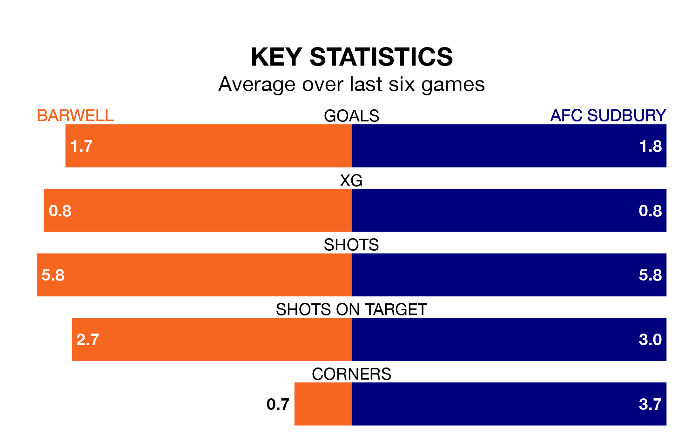

Barwell face AFC Sudbury at Kirkby Road on Saturday looking to secure a first win in six Southern League Premier – Central games.
Barwell have lost two and drawn three matches since they last earned three points – against Stourbridge on December 16.
They face a Sudbury side who have won three and lost two over that time.
With 34 goals in 25 games so far this season, Sudbury are scoring at below the league average rate with 1.4 goals per game. And they are conceding at an average rate, letting in 38 goals at a rate of 1.5 per game.
Barwell, meanwhile, are above average scorers, with 1.6 goals per game, compared to a league average of 1.5. They have conceded 1.7 goals per game.
The away side are 18th in the table after 25 games, of which they have won seven and drawn six, earning 27 points.
The hosts are six places ahead of Sudbury in 12th, with eight wins and 10 draws putting them on 34 points.
Barwell's last match was on January 13, a 4-3 loss against Stratford Town.
Sudbury lost 1-0 against Alvechurch last time out, also on January 13.
Updated: 10:02 (UTC), 19/01/24